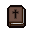
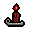
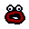
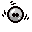
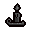
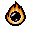
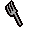
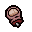
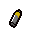
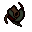

| Nombre | Icono | Descripción |
|---|---|---|
| Biblia |  | Al usarlo podrás volar por la habitación hasta que salgas de la misma. |
| Vela Roja |  | Lanza una llama roja hacia delante que inflinge daño a su paso hasta que se apaga |
| Shoop da Woop |  | Dispara un rayo láser hacia delante de gran daño |
| Diplopia |  | Duplica todos los objetos que hay en la habitación |
| Nombre | Icono | Descripción |
|---|---|---|
| Manto Sagrado | Proporciona un escudo cada vez que entras a una habitación | |
| Vela Negra |  | Elimina todas las maldiciones y evita que aparezcan |
| Mente ígnea |  | Convierte tus disparos en fuego y tiene la posibilidad de explotar |
| Túnica ceremonial | Aumenta tu daño y te añade 3 corazones de vida |
| Nombre | Icono | Descripción |
|---|---|---|
| Tenedor |  | Existe la posibilidad que al completar una habitación te cure medio corazón |
| Dedo de la suerte |  | Aumenta la suerte en 1 |
| Batería AAA |  | Recarga una parte de la energía necesaria para usar un activable |
| Cancer |  | Aumenta la rapidez con la que disparas |